宏观经济#
plotly带来交互，但是导致文件过大，不能上传github，得不偿失
TODO: 替换为seaborn
import pandas as pd
import akshare as ak
import seaborn as sns
import matplotlib.pyplot as plt
fonts = ['Microsoft YaHei', 'SimHei', 'SimSun', 'sans-serif']
plt.rcParams['font.sans-serif'] = fonts
plt.rcParams['axes.unicode_minus'] = False
sns.set_theme(
style="whitegrid",
context="notebook",
palette="muted",
font=fonts,
rc={
"axes.unicode_minus": False, # 解决负号乱码
"lines.linewidth": 2.5 # 线条加粗，更有质感
}
)
杠杆率#
macro_cnbs_df = ak.macro_cnbs()
macro_cnbs_df = macro_cnbs_df.set_index('年份')
macro_cnbs_df
| 居民部门 | 非金融企业部门 | 政府部门 | 中央政府 | 地方政府 | 实体经济部门 | 金融部门资产方 | 金融部门负债方 | |
|---|---|---|---|---|---|---|---|---|
| 年份 | ||||||||
| 2005-03 | 17.6 | 104.6 | 26.4 | 18.0 | 8.4 | 148.6 | 20.9 | 21.1 |
| 2005-06 | 17.6 | 101.1 | 26.6 | 18.0 | 8.6 | 145.3 | 23.0 | 22.4 |
| 2005-09 | 17.3 | 100.1 | 26.7 | 17.9 | 8.8 | 144.1 | 23.9 | 23.6 |
| 2005-12 | 16.6 | 98.4 | 26.2 | 17.2 | 9.0 | 141.2 | 24.1 | 23.9 |
| 2006-03 | 17.2 | 100.5 | 25.5 | 16.2 | 9.3 | 143.2 | 24.9 | 24.6 |
| ... | ... | ... | ... | ... | ... | ... | ... | ... |
| 2023-12 | 61.9 | 163.9 | 54.7 | 23.2 | 31.5 | 280.5 | 51.1 | 65.5 |
| 2024-03 | 62.3 | 169.5 | 55.3 | 23.4 | 31.9 | 287.1 | 52.2 | 67.0 |
| 2024-06 | 61.8 | 169.7 | 56.3 | 24.0 | 32.3 | 287.8 | 50.5 | 68.6 |
| 2024-09 | 61.6 | 169.9 | 58.7 | 25.1 | 33.6 | 290.2 | 50.9 | 70.8 |
| 2024-12 | 61.4 | 168.4 | 60.8 | 25.6 | 35.2 | 290.6 | 51.2 | 70.2 |
80 rows × 8 columns
import matplotlib.ticker as ticker
plt.figure(figsize=(12, 6))
ax = sns.lineplot(data=macro_cnbs_df) # Seaborn 会自动将列名作为线段标签
# plt.xticks(rotation=75, ha='right') # 太密了
ax.xaxis.set_major_locator(ticker.MultipleLocator(10))
plt.title('宏观杠杆率变化')
plt.ylabel('杠杆率')
Text(0, 0.5, '杠杆率')
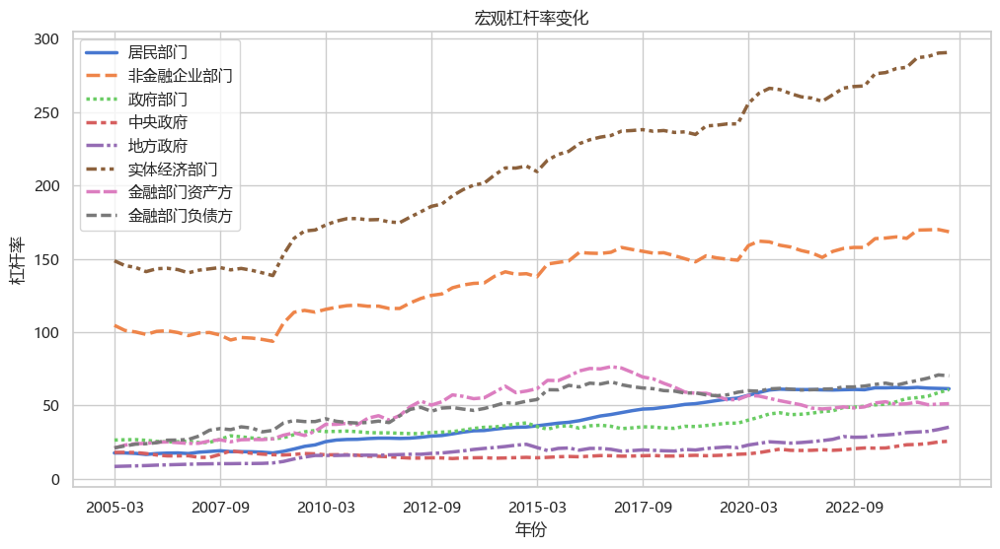
📌
整体杠杆率呈持续上升趋势，反映出宏观债务水平的持续扩大。
自 2020 年第三季度起，居民部门杠杆率趋于稳定，维持在 60% 至 62% 区间。
2020 年第三季度后，政府与非金融企业部门杠杆率同步上行，是推动总体杠杆率上升的主要因素。
国民经济运行情况#
企业商品价格指数#
macro_china_qyspjg_df = ak.macro_china_qyspjg()
macro_china_qyspjg_df.head()
| 月份 | 总指数-指数值 | 总指数-同比增长 | 总指数-环比增长 | 农产品-指数值 | 农产品-同比增长 | 农产品-环比增长 | 矿产品-指数值 | 矿产品-同比增长 | 矿产品-环比增长 | 煤油电-指数值 | 煤油电-同比增长 | 煤油电-环比增长 | |
|---|---|---|---|---|---|---|---|---|---|---|---|---|---|
| 0 | 2025年12月份 | 98.8 | 0.508647 | 0.713558 | 100.4 | 1.006036 | 2.974359 | 112.4 | 10.738916 | 1.444043 | 94.7 | -0.941423 | -0.210748 |
| 1 | 2025年11月份 | 98.1 | -0.507099 | 0.822199 | 97.5 | -5.247813 | 6.209150 | 110.8 | 8.203125 | 1.002735 | 94.9 | 0.317125 | -0.105263 |
| 2 | 2025年10月份 | 97.3 | -1.717172 | -0.409417 | 91.8 | -13.314448 | 1.101322 | 109.7 | 4.675573 | -0.091075 | 95.0 | 1.387407 | -1.144641 |
| 3 | 2025年09月份 | 97.7 | -0.610376 | 0.411100 | 90.8 | -15.219421 | -0.873362 | 109.8 | 6.189555 | 3.487276 | 96.1 | 3.444564 | 2.234043 |
| 4 | 2025年08月份 | 97.3 | -1.816347 | 0.205973 | 91.6 | -13.175355 | -5.274043 | 106.1 | 0.473485 | 3.310613 | 94.0 | -2.892562 | 1.184069 |
城镇调查失业率#
macro_china_urban_unemployment_df = ak.macro_china_urban_unemployment()
macro_china_urban_unemployment_df_wide = macro_china_urban_unemployment_df.pivot(index='date',columns='item',values='value')
macro_china_urban_unemployment_df_wide.index = pd.to_datetime(macro_china_urban_unemployment_df_wide.index, format='%Y%m')
ax = sns.lineplot(data=macro_china_urban_unemployment_df_wide)
plt.title('失业率统计（按月份）', fontsize=16)
plt.xlabel('日期')
plt.ylabel('失业率')
plt.legend(title='项目') #
plt.tight_layout()
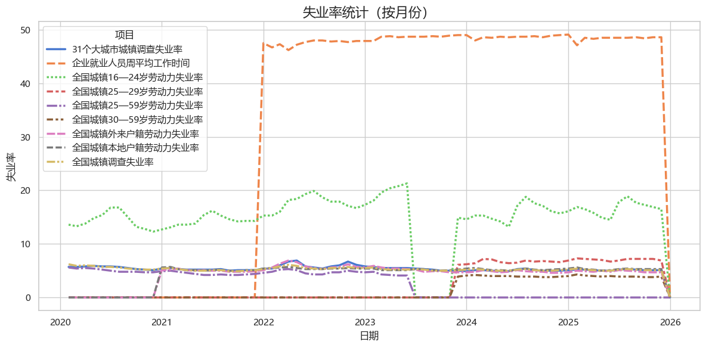
📌
国家统计局的统计数据不知是否可靠。且部分数据缺失。
城镇失业率大概在5%-6%之间。
LPR品种数据#
macro_china_lpr_df = ak.macro_china_lpr()
macro_china_lpr_df.set_index('TRADE_DATE', inplace=True)
ax = sns.lineplot(data=macro_china_lpr_df)
plt.title("中国LPR利率变化趋势", fontsize=16)
plt.xlabel("日期")
plt.ylabel("LPR (%)")
plt.legend(title="项目")
<matplotlib.legend.Legend at 0x2ab0d6bfc50>
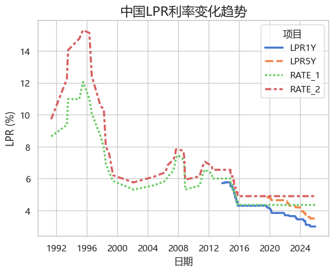
📌
LPR 于 2019 年 8 月正式推出，因此早期数据中 LPR 列为空（NaN）属正常情况。
当前（最新）1年期 LPR 为 3.5, 5年期LPR为3.0，处于历史最低位。
自推出以来，LPR 呈下降趋势：三年内下调约 0.8 个百分点，五年内累计下调约 1.0 个百分点。表明贷款难度下降，但消费力长期不足。
1年期与5年期 LPR 的利差逐步收窄，从最初的 0.65 降至当前的 0.4，表明长期贷款成本相对下降，货币政策更偏向刺激中长期信贷，也可能反映房地产、基建等长期资金需求较为疲软。
社融增量统计#
macro_china_shrzgm_df = ak.macro_china_shrzgm()
macro_china_shrzgm_df['月份'] = pd.to_datetime(macro_china_shrzgm_df['月份'], format='%Y%m')
macro_china_shrzgm_df.set_index('月份', inplace=True)
macro_china_shrzgm_df.columns = [ col.replace('其中-','') for col in macro_china_shrzgm_df.columns]
---------------------------------------------------------------------------
SSLError Traceback (most recent call last)
SSLError: [SSL: SSLV3_ALERT_HANDSHAKE_FAILURE] ssl/tls alert handshake failure (_ssl.c:1032)
The above exception was the direct cause of the following exception:
MaxRetryError Traceback (most recent call last)
File c:\Users\63517\miniconda3\envs\data-analysis\Lib\site-packages\requests\adapters.py:644, in HTTPAdapter.send(self, request, stream, timeout, verify, cert, proxies)
643 try:
--> 644 resp = conn.urlopen(
645 method=request.method,
646 url=url,
647 body=request.body,
648 headers=request.headers,
649 redirect=False,
650 assert_same_host=False,
651 preload_content=False,
652 decode_content=False,
653 retries=self.max_retries,
654 timeout=timeout,
655 chunked=chunked,
656 )
658 except (ProtocolError, OSError) as err:
File c:\Users\63517\miniconda3\envs\data-analysis\Lib\site-packages\urllib3\connectionpool.py:841, in HTTPConnectionPool.urlopen(self, method, url, body, headers, retries, redirect, assert_same_host, timeout, pool_timeout, release_conn, chunked, body_pos, preload_content, decode_content, **response_kw)
839 new_e = ProtocolError("Connection aborted.", new_e)
--> 841 retries = retries.increment(
842 method, url, error=new_e, _pool=self, _stacktrace=sys.exc_info()[2]
843 )
844 retries.sleep()
File c:\Users\63517\miniconda3\envs\data-analysis\Lib\site-packages\urllib3\util\retry.py:535, in Retry.increment(self, method, url, response, error, _pool, _stacktrace)
534 reason = error or ResponseError(cause)
--> 535 raise MaxRetryError(_pool, url, reason) from reason # type: ignore[arg-type]
537 log.debug("Incremented Retry for (url='%s'): %r", url, new_retry)
MaxRetryError: HTTPSConnectionPool(host='data.mofcom.gov.cn', port=443): Max retries exceeded with url: /datamofcom/front/gnmy/shrzgmQuery (Caused by SSLError(SSLError(1, '[SSL: SSLV3_ALERT_HANDSHAKE_FAILURE] ssl/tls alert handshake failure (_ssl.c:1032)')))
During handling of the above exception, another exception occurred:
SSLError Traceback (most recent call last)
Cell In[10], line 1
----> 1 macro_china_shrzgm_df = ak.macro_china_shrzgm()
2 macro_china_shrzgm_df['月份'] = pd.to_datetime(macro_china_shrzgm_df['月份'], format='%Y%m')
3 macro_china_shrzgm_df.set_index('月份', inplace=True)
File c:\Users\63517\miniconda3\envs\data-analysis\Lib\site-packages\akshare\economic\macro_china.py:267, in macro_china_shrzgm()
265 session.mount(prefix='https://', adapter=TLSAdapter())
266 url = "https://data.mofcom.gov.cn/datamofcom/front/gnmy/shrzgmQuery"
--> 267 r = session.post(url)
268 data_json = r.json()
269 temp_df = pd.DataFrame(data_json)
File c:\Users\63517\miniconda3\envs\data-analysis\Lib\site-packages\requests\sessions.py:637, in Session.post(self, url, data, json, **kwargs)
626 def post(self, url, data=None, json=None, **kwargs):
627 r"""Sends a POST request. Returns :class:`Response` object.
628
629 :param url: URL for the new :class:`Request` object.
(...) 634 :rtype: requests.Response
635 """
--> 637 return self.request("POST", url, data=data, json=json, **kwargs)
File c:\Users\63517\miniconda3\envs\data-analysis\Lib\site-packages\requests\sessions.py:589, in Session.request(self, method, url, params, data, headers, cookies, files, auth, timeout, allow_redirects, proxies, hooks, stream, verify, cert, json)
584 send_kwargs = {
585 "timeout": timeout,
586 "allow_redirects": allow_redirects,
587 }
588 send_kwargs.update(settings)
--> 589 resp = self.send(prep, **send_kwargs)
591 return resp
File c:\Users\63517\miniconda3\envs\data-analysis\Lib\site-packages\requests\sessions.py:703, in Session.send(self, request, **kwargs)
700 start = preferred_clock()
702 # Send the request
--> 703 r = adapter.send(request, **kwargs)
705 # Total elapsed time of the request (approximately)
706 elapsed = preferred_clock() - start
File c:\Users\63517\miniconda3\envs\data-analysis\Lib\site-packages\requests\adapters.py:675, in HTTPAdapter.send(self, request, stream, timeout, verify, cert, proxies)
671 raise ProxyError(e, request=request)
673 if isinstance(e.reason, _SSLError):
674 # This branch is for urllib3 v1.22 and later.
--> 675 raise SSLError(e, request=request)
677 raise ConnectionError(e, request=request)
679 except ClosedPoolError as e:
SSLError: HTTPSConnectionPool(host='data.mofcom.gov.cn', port=443): Max retries exceeded with url: /datamofcom/front/gnmy/shrzgmQuery (Caused by SSLError(SSLError(1, '[SSL: SSLV3_ALERT_HANDSHAKE_FAILURE] ssl/tls alert handshake failure (_ssl.c:1032)')))
📌 反映每个月中国实体经济从各渠道获得的新增资金总量以及结构
社融增量主要来自人名币贷款。
每年的趋势大致相同，一月份是社融增量高峰。这体现了政策、银行、企业贷款需求的周期性。
GDP年率#
macro_china_gdp_yearly_df = ak.macro_china_gdp_yearly()
plt.figure(figsize=(10, 6))
ax = sns.lineplot(data=macro_china_gdp_yearly_df, x='日期', y='今值')
ax.set_title('GDP年率报告(季度)', fontsize=15)
ax.set_xlabel('季度', fontsize=12)
ax.set_ylabel('GDP年同比增长率(%)', fontsize=12)
Text(0, 0.5, 'GDP年同比增长率(%)')
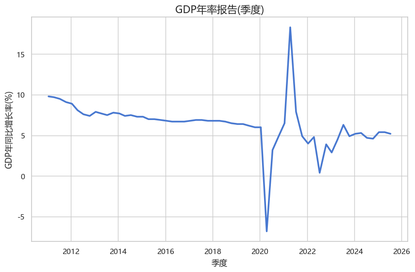
📌
自 2011 年以来，中国 GDP 年增速呈持续放缓趋势，从 9.5% 降至约 5%，反映出经济由高速增长阶段逐步迈向高质量、稳态发展阶段。
2020 年一季度，受新冠疫情严重冲击，GDP 增速首次转负，达到 -6.5%。此后虽逐步恢复，到 2023 年三季度，增速才趋于稳定。
然而，增速“稳定”并不意味着 GDP 总量已完全恢复至疫情前的自然增长轨迹。🔍增速仅反映相对变化率，要评估真实经济恢复情况，应结合GDP总量综合判断。
CPI#
macro_china_cpi_monthly_df = ak.macro_china_cpi_monthly()
df_melted = macro_china_cpi_monthly_df.melt(
id_vars=['日期'],
value_vars=['今值', '预测值'],
var_name='项目',
value_name='CPI月环比增长率(%)'
)
plt.figure(figsize=(10, 6))
ax = sns.lineplot(data=df_melted, x='日期', y='CPI月环比增长率(%)', hue='项目')
ax.set_title('中国CPI月率', fontsize=15)
ax.set_xlabel('月度', fontsize=12)
ax.set_ylabel('CPI月环比增长率(%)', fontsize=12)
Text(0, 0.5, 'CPI月环比增长率(%)')
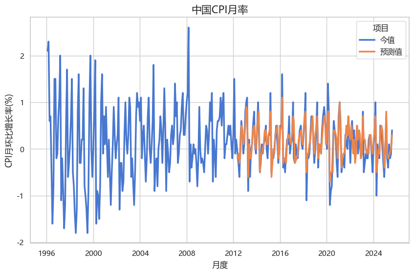
📌
长期来看，CPI波动幅度逐渐减小，消费物价趋于稳定，因此CPI更适合反映短期几个月内的价格变动。
2025年3、4、6月CPI同比连续为负，尽管5月小幅回升至0.1%，但反弹力度有限，显示整体消费需求偏弱。
若CPI持续负增长，将可能引发通缩风险，其传导机制包括：
供大于求 → 商品价格下行 → 企业销售困难、盈利下降 → 减少投资、裁员减产；
企业经营压力传导至居民 → 收入下降 → 消费进一步收缩，形成恶性循环；
通缩期间货币购买力上升 → 债务实际负担加重 → 企业、个人违约风险上升，可能引发信用危机与破产潮。
当前LPR（贷款市场报价利率）呈下降趋势，反映出政府正在通过信贷宽松和低利率政策提振消费和投资，缓解通缩压力。
PPI#
macro_china_ppi_yearly_df = ak.macro_china_ppi_yearly()
plt.figure(figsize=(10, 5))
ax = sns.lineplot(data=macro_china_cpi_monthly_df, x='日期', y='今值')
ax.set_title('中国PPI年率', fontsize=14)
ax.set_xlabel('月度', fontsize=12)
ax.set_ylabel('PPI月环比增长率(%)', fontsize=12)
Text(0, 0.5, 'PPI月环比增长率(%)')
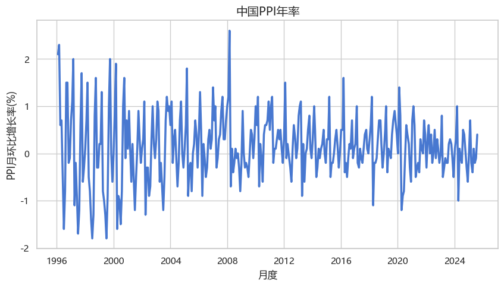
📌
长期来看，PPI波动幅度逐渐减小，生产端趋于稳定，因此CPI更适合反映短期几个月内的价格变动。
2025以来，和CPI同步。
金融指标#
外汇储备#
macro_china_fx_reserves_yearly_df = ak.macro_china_fx_reserves_yearly()
macro_china_fx_reserves_yearly_df['日期'] = pd.to_datetime(macro_china_fx_reserves_yearly_df['日期'])
macro_china_fx_reserves_yearly_df['year'] = macro_china_fx_reserves_yearly_df['日期'].dt.year
macro_china_fx_reserves_yearly_df['month'] = macro_china_fx_reserves_yearly_df['日期'].dt.month
plotdf = macro_china_fx_reserves_yearly_df.groupby(['year','month'])['今值'].sum()
plotdf = plotdf.reset_index()
plotdf['日期'] = pd.to_datetime({
'year':plotdf['year'],
'month':plotdf['month'],
'day':1, # 第一天默认
})
plt.figure(figsize=(12, 6))
ax = sns.lineplot(data=plotdf, x='日期', y='今值', marker='o', markersize=4)
ax.set_title('中国外汇储备', fontsize=16, pad=20)
ax.set_xlabel('月度', fontsize=12)
ax.set_ylabel('外汇储备(单位：亿美元)', fontsize=12)
plt.xticks(rotation=45)
plt.tight_layout()
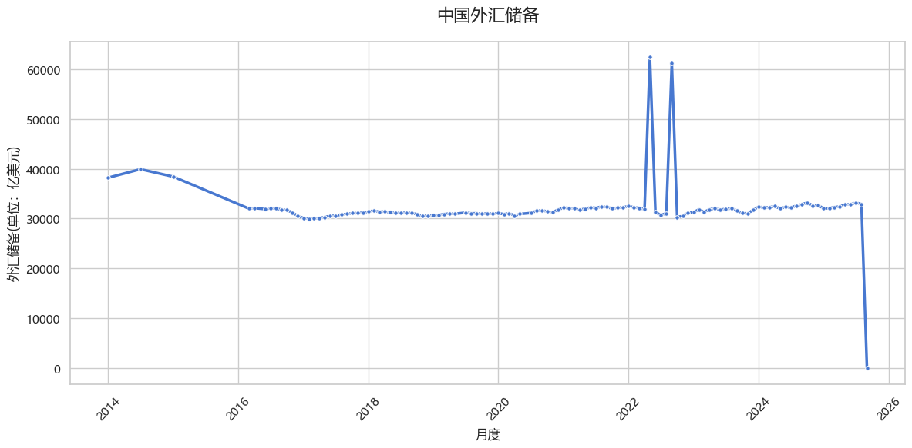
📌
最新外汇储备 32850 亿美元
M2货币供应量#
macro_china_m2_yearly_df = ak.macro_china_m2_yearly()
macro_china_m2_yearly_df['日期'] = pd.to_datetime(macro_china_m2_yearly_df['日期'])
macro_china_m2_yearly_df['year'] = macro_china_m2_yearly_df['日期'].dt.year
macro_china_m2_yearly_df['month'] = macro_china_m2_yearly_df['日期'].dt.month
plotdf = macro_china_m2_yearly_df.groupby(['year','month'])['今值'].sum()
plotdf = plotdf.reset_index()
plotdf['日期'] = pd.to_datetime({
'year':plotdf['year'],
'month':plotdf['month'],
'day':1, # 第一天默认
})
ax = sns.lineplot(data=plotdf, x='日期', y='今值')
ax.set_title('中国M2货币供应', fontsize=15, pad=20)
ax.set_xlabel('日期', fontsize=12)
ax.set_ylabel('同比增长率%', fontsize=12)
plt.xticks(rotation=45)
plt.show()
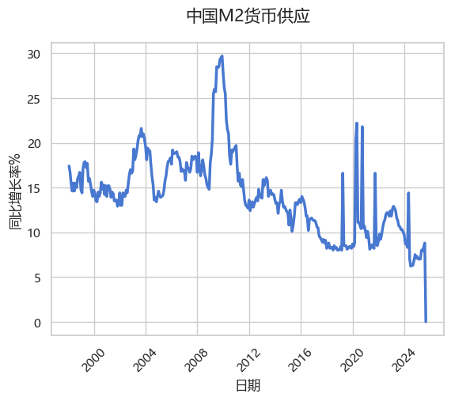
📌
5月的M2货币同比增长7.9%
✅ 带加入后面的货币供应量数据一起
新房价价格指数#
city1 = '上海'
city2 = '成都'
macro_china_new_house_price_df = ak.macro_china_new_house_price(city_first=city1,
city_second=city2)
# 把指标扁平化作为 合并一列，
plotdf = pd.melt(
macro_china_new_house_price_df,
id_vars=['日期', '城市'],
value_vars=[
'新建商品住宅价格指数-同比',
'新建商品住宅价格指数-环比',
'新建商品住宅价格指数-定基',
'二手住宅价格指数-同比',
'二手住宅价格指数-环比',
'二手住宅价格指数-定基'
],
var_name='项目',
value_name='增长率%'
)
plt.figure(figsize=(12, 6))
ax = sns.lineplot(
data=plotdf,
x='日期',
y='增长率%',
hue='项目', # 区分价格指数类型
style='城市', # 区分城市（实线/虚线）
markers=True, # 加上数据点标记，方便辨认
dashes=True # 启用虚线效果
)
ax.set_title(f'{city1} vs {city2} 房价指数对比', fontsize=16, pad=20)
ax.set_xlabel('日期', fontsize=12)
ax.set_ylabel('增长率 %', fontsize=12)
plt.legend(title='图例', bbox_to_anchor=(1.05, 1), loc='upper left')
plt.xticks(rotation=45)
plt.tight_layout()
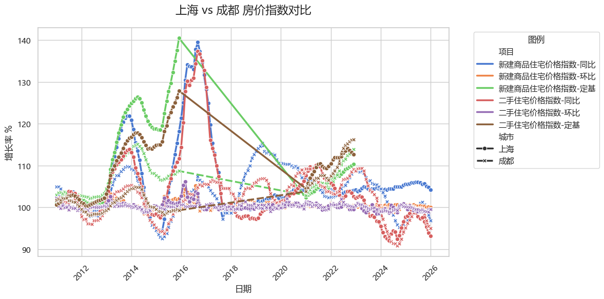
企业景气及企业家信心指数#
macro_china_enterprise_boom_index_df = ak.macro_china_enterprise_boom_index()
def jidu_to_datetime(s):
if not isinstance(s, str):
return pd.NaT # 表示时间缺失值
year = s[:4]
quarter = s[6]
month = str((int(quarter) - 1) * 3 + 1 )
return pd.to_datetime(f'{year}-{month}-01')
macro_china_enterprise_boom_index_df['quarter'] = macro_china_enterprise_boom_index_df['季度'].apply(jidu_to_datetime)
value_vars = [
'企业景气指数-指数', '企业景气指数-同比', '企业景气指数-环比',
'企业家信心指数-指数', '企业家信心指数-同比', '企业家信心指数-环比'
]
plot_df_melted = macro_china_enterprise_boom_index_df.melt(
id_vars=['quarter'],
value_vars=value_vars,
var_name='指数类型',
value_name='数值'
)
ax = sns.lineplot(
data=plot_df_melted,
x='quarter',
y='数值',
hue='指数类型',
marker='o' # 增加点标记，方便区分 6 条线
)
ax.set_title('中国企业景气指数和企业家信心指数', fontsize=16, pad=20)
ax.set_xlabel('日期', fontsize=12)
ax.set_ylabel('增长率% / 指数', fontsize=12)
plt.legend(title='指数类型', bbox_to_anchor=(1.02, 1), loc='upper left', borderaxespad=0.)
plt.xticks(rotation=45)
plt.tight_layout()
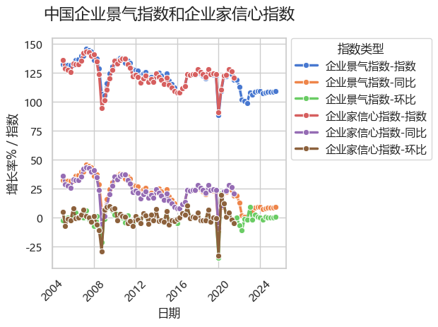
税收收入#
macro_china_national_tax_receipts_df = ak.macro_china_national_tax_receipts()
# copy保证新的副本
plot_year_df = macro_china_national_tax_receipts_df[macro_china_national_tax_receipts_df['季度'].str.contains('1-4季度')].copy()
plot_year_df['年份'] = plot_year_df['季度'].apply(lambda x:pd.to_datetime(f'{x[:4]}', format='%Y'))
fig, ax1 = plt.subplots(figsize=(12, 6))
sns.lineplot(
data=plot_year_df,
x='年份',
y='税收收入合计',
ax=ax1,
label='税收收入',
color='tab:blue',
marker='o'
)
ax1.set_title('中国税收入年度报告', fontsize=16, pad=20)
ax1.set_xlabel('Year', fontsize=12)
ax1.set_ylabel('税收收入，单位：亿美元', fontsize=12, color='tab:blue')
ax1.tick_params(axis='y', labelcolor='tab:blue') # 让 Y 轴刻度颜色与线条一致
# 4. 创建次轴 (ax2)，共用 X 轴
ax2 = ax1.twinx()
# --- 绘制右轴数据 (年增长率) ---
sns.lineplot(
data=plot_year_df,
x='年份',
y='较上年同期',
ax=ax2,
label='年增长率',
color='tab:red',
marker='s' # 使用不同的标记形状
)
ax2.set_ylabel('较去年同比增长率：%', fontsize=12, color='tab:red')
ax2.tick_params(axis='y', labelcolor='tab:red')
# 5. 合并图例
# 因为 ax1 和 ax2 是独立的，直接 show 会出现两个图例框
lines1, labels1 = ax1.get_legend_handles_labels()
lines2, labels2 = ax2.get_legend_handles_labels()
ax1.legend(lines1 + lines2, labels1 + labels2, loc='upper left')
ax2.get_legend().remove() # 移除多余的图例
# 6. 辅助线（可选：在增长率 0 位画一条基准线）
ax2.axhline(0, color='gray', linestyle='--', linewidth=1, alpha=0.5)
plt.tight_layout()
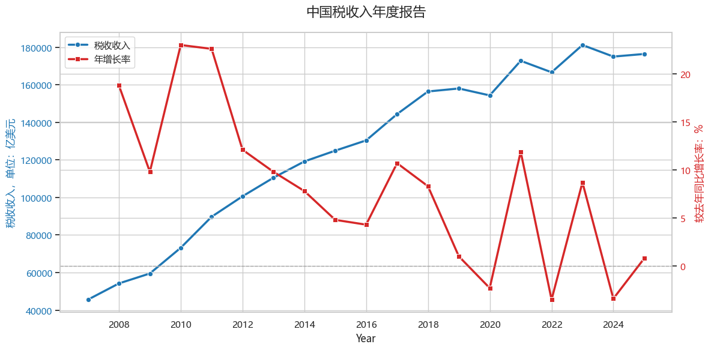
银行理财产品发行数量#
macro_china_bank_financing_df = ak.macro_china_bank_financing()
macro_china_bank_financing_df['日期'] = pd.to_datetime(macro_china_bank_financing_df['日期'])
# 配合%显示tickformat
macro_china_bank_financing_df['涨跌幅'] = macro_china_bank_financing_df['涨跌幅'].apply(lambda x:x/100)
macro_china_bank_financing_df['近3月涨跌幅'] = macro_china_bank_financing_df['近3月涨跌幅'].apply(lambda x:x/100)
macro_china_bank_financing_df['近6月涨跌幅'] = macro_china_bank_financing_df['近6月涨跌幅'].apply(lambda x:x/100)
macro_china_bank_financing_df['近1年涨跌幅'] = macro_china_bank_financing_df['近1年涨跌幅'].apply(lambda x:x/100)
macro_china_bank_financing_df['近2年涨跌幅'] = macro_china_bank_financing_df['近2年涨跌幅'].apply(lambda x:x/100)
macro_china_bank_financing_df['近3年涨跌幅'] = macro_china_bank_financing_df['近3年涨跌幅'].apply(lambda x:x/100)
# 2015 年之后比较稳定
macro_china_bank_financing_df = macro_china_bank_financing_df[macro_china_bank_financing_df['日期'].dt.year > 2015]
plotdf = macro_china_bank_financing_df
# 3. 创建子图布局：2行1列，共享X轴，设置高度比例
# gridspec_kw 可以调整子图的高度比例，比如让上图大一点
fig, (ax1, ax2) = plt.subplots(2, 1, figsize=(12, 10), sharex=True,
gridspec_kw={'height_ratios': [1, 1]})
# --- 上子图 (Row 1): 发行数量 ---
sns.lineplot(data=plotdf, x='日期', y='最新值', ax=ax1, label='银行理财产品发行数量', color='tab:blue')
ax1.set_title('银行发行理财产品数量报告', fontsize=16, pad=20)
ax1.set_ylabel('理财产品发行数量', fontsize=12)
ax1.legend(loc='upper left')
# --- 下子图 (Row 2): 多维度涨跌幅 ---
# 依次绘制多条线，手动指定 ax=ax2
sns.lineplot(data=plotdf, x='日期', y='涨跌幅', ax=ax2, label='月涨跌幅', alpha=0.8)
sns.lineplot(data=plotdf, x='日期', y='近6月涨跌幅', ax=ax2, label='近6月涨跌幅', alpha=0.8)
sns.lineplot(data=plotdf, x='日期', y='近1年涨跌幅', ax=ax2, label='近1年涨跌幅', alpha=0.8)
sns.lineplot(data=plotdf, x='日期', y='近3年涨跌幅', ax=ax2, label='近3年涨跌幅', alpha=0.8)
# 设置下子图属性
ax2.set_ylabel('增长率%', fontsize=12)
# 格式化 Y 轴为百分比（如果数据已经是 0.05 这种格式，使用 PercentFormatter）
from matplotlib.ticker import PercentFormatter
# 如果数据是 5(表示5%), 用下行；如果是 0.05(表示5%), 用 PercentFormatter(1.0)
ax2.yaxis.set_major_formatter(PercentFormatter(xmax=1 if plotdf['涨跌幅'].max() <= 1 else 100))
# 4. 全局优化
plt.xlabel('日期', fontsize=12)
plt.xticks(rotation=45)
# 调整子图间距 (对应 vertical_spacing)
plt.subplots_adjust(hspace=0.08)
# 合并或美化图例
ax2.legend(loc='upper left', ncol=2) # 4条线，两列显示更整齐
plt.tight_layout()
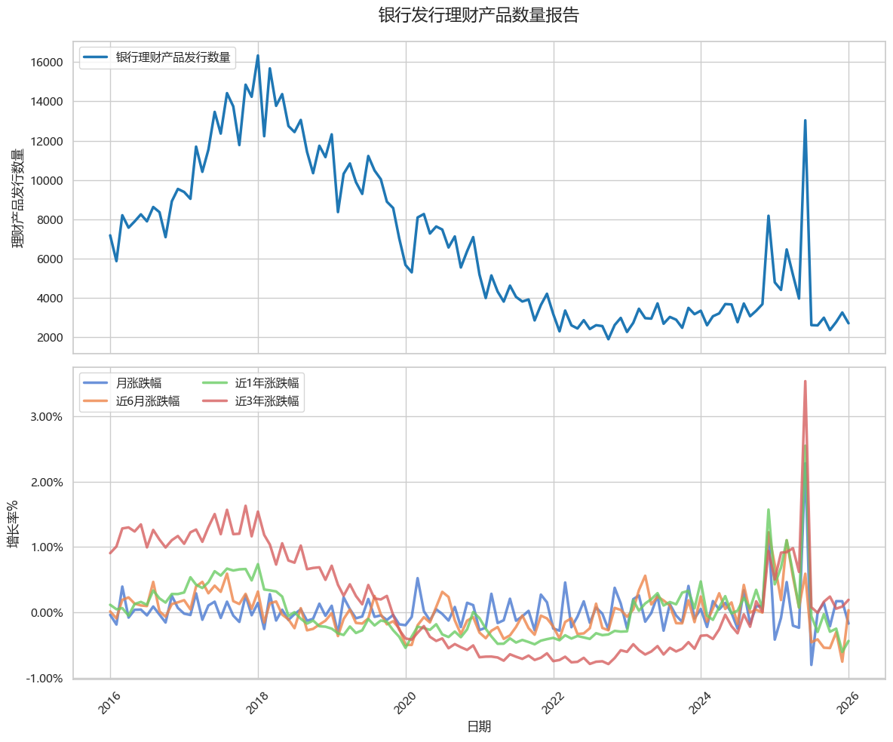